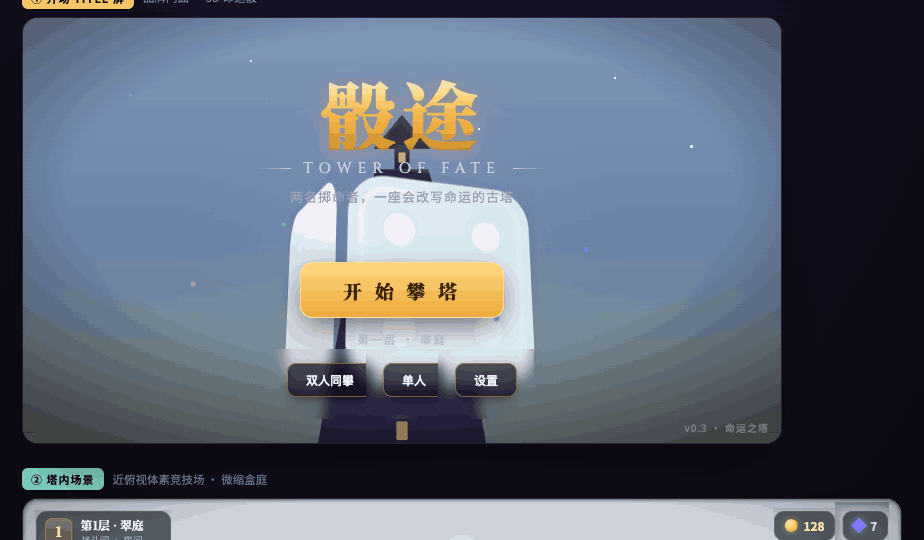
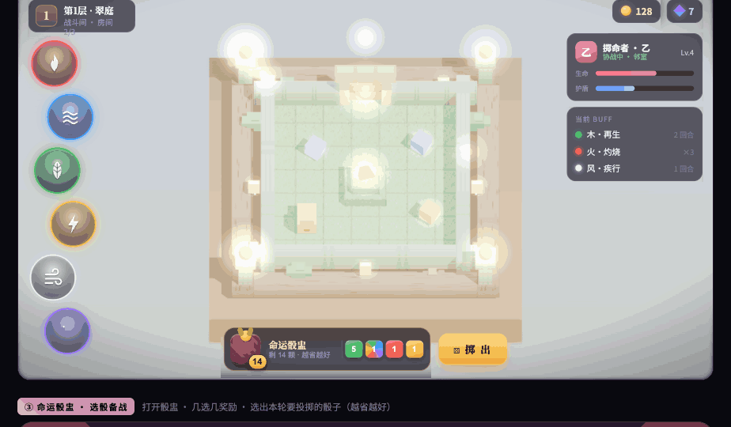
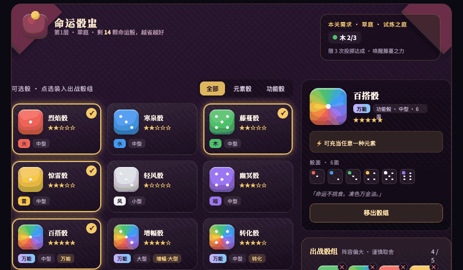
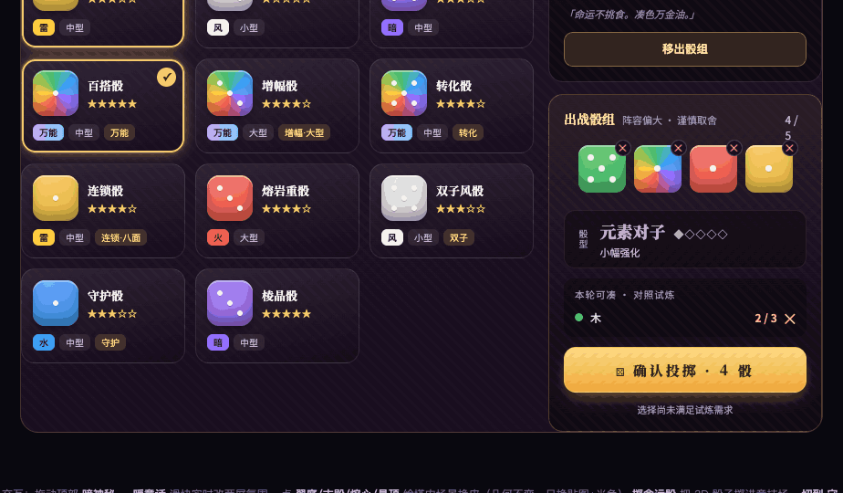
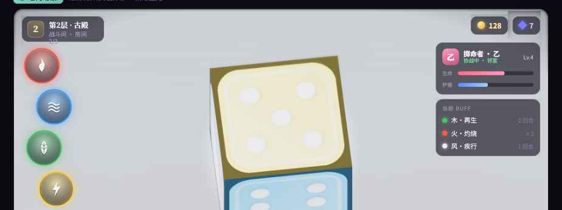
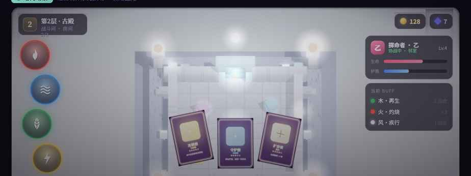

骰途
TOWER OF FATE
视觉美术设计交付文案 · Art Design Brief
双人合作 · 骰子 Roguelike。本文对位已落地的可交互 3D 原型，把每块画面、每套系统的「要长成什么样」描述清楚，供美术设计师（Cloud Design）产出 mockup / key art / 色板 / 控件皮 / 骰面与元素视觉语言。骨架已就位、可运行——设计师做的是「皮」。
奇幻明快
童话微缩盒庭
体素 + 精美贴图
一点魔幻宿命感
📦 交付包内含（已打包下载）
- 骰途 美术设计文案（本文档）— 美术命题 + 截图对位，可「保存为 PDF」。
- 骰途 视觉原型 — 完整可交互 3D 原型（Title / 塔内场景 / 命运骰盅 / 通关转场+战利品），双击即开、可玩。这是最权威的视觉参照，转场与发牌等动效请以原型实机为准。
- screenshots/doc/ — 本文档用到的全部关键截图（图①–④b，均实拍自原型）。
原型为程序化生成（贴图/色板皆由代码绘制，无外部美术资产文件）——设计师产出的贴图/图标按「顶面/侧面」「卡面/图标」交回即可替换换皮。
0 · 一页速览
《骰途 · 命运之塔》是双人合作的骰子 Roguelike。两名「掷命者」结伴攀登一座会改写命运的古塔，所有战斗用掷骰解决，一层层往上闯，每层 2 试炼 + 1 守关者。基调是奇幻明快 + 一点神秘宿命感：体素方块风 + 柔光泛光的童话微缩模型质感——不暗黑、不写实，温暖、可爱、彩色、一点魔幻。
核心美术命题
几何永远是廉价的立方体（体素），丰富度全压在贴图 + 光照 + 色彩上。避免高面数建模，做成「带精美贴图的体素世界」。
参照气质
《奇诺比奥队长》的可爱微缩盒庭为主 · 《哈迪斯》的精致俯视 · 《弓箭传说》的近俯视战场 · 《Balatro》的桌面神秘骰牌质感。
四块画面 + 一段转场：① 开场 Title 屏 · ② 塔内场景 · ③ 命运骰盅（选骰备战）· ④ 通关转场 + 3D 战利品。下文逐块给美术命题。
1 · 全局美术风格指南
- 几何：体素（立方体）为主 + 极少量精模（守关者 / 吉祥物）作 showcase。别做高面数复杂模型——这是省成本、可批量渲染的硬约束。
- 丰富度来源：贴图 + 光照 + 色彩，不是建模。每种材质 = 一套体素贴图（顶面 / 侧面两张）。
- 整体调性：明快、温暖、彩色、童话微缩 + 一点魔幻神秘。非写实、非暗黑。
- 光照氛围：保留「微缩模型」感——柔和接触阴影 + 移轴景深（上下渐糊）+ 轻泛光（让发光物自发光）。温暖、通透。
2 · 屏 ① 开场 Title 屏
目的：第一眼建立「神秘命运之塔 + 骰子 + 双人冒险」气质，并给出开始入口。
- 主视觉 = 一颗活的 3D 滚动骰子（已落地：引擎渲一颗真 3D 骰子 + 光照 + 缓慢旋转）。立体、有体积、有光影反射，骰面带颜色 = 元素（六色）。设计师定造型 / 材质 / 六色面 / 旋转氛围。
- 背景：骰子之后是神秘高塔的剪影 / 远景，向上消失在云雾 / 星空里（呼应「往上攀登」「命运」）。暗紫 / 靛蓝 / 墨 + 高光点缀，神秘但不压抑。
- Logo / 标题：「骰途」做成有设计感的主标（可融入骰子点数 / 塔的意象），配英文副标「TOWER OF FATE」，金色暖光质感。
- 主按钮「开始攀塔」：醒目 hero 按钮（带微光呼吸感），下方小字「第一层 · 翠庭」。次级入口「双人同攀 / 单人 / 设置」需在浅色骰子上保证对比度（深色玻璃底 + 金边）。
- 氛围：发光符文、微粒、柔光，烘托骰子。
 图① 开场 Title 屏（实拍自原型）—— 中央是可运行的 3D 命运骰子，后方高塔剪影 + 星空；golden logo、呼吸感 hero 按钮、次级入口。设计师要做的：骰子造型/材质/六色面、塔背景 key art、logo 主标。
3 · 屏 ② 塔内场景（gameplay 主画面）
目的：一屏一个独立战场竞技场，玩家在此掷骰战斗。近俯视、关卡往上推进、房间一间接一间。已落地为「浮空微缩盒庭」。
- 体素贴图：纯色方块升级成带精美贴图的体素——地面 / 墙体 / 门 / 装饰，每种材质一套顶面 + 侧面贴图（像《我的世界》方块，但更精致考究、有手绘质感）。
- 浮空盒庭：竞技场坐在分层基座上像浮空模型；四角立发光火盆给暖光与纵向层次；外圈按主题摆装饰（翠庭灌木 / 蘑菇、古殿残柱、熔心余烬、晶顶晶簇，自动随层换色）；上方飘灯笼微粒。中心战斗区保持干净好读。
- 竞技场构成：地台（清爽好读的「舞台」）· 围墙 + 朝画面上方的发光出口门（通向更高层，门楣 / 符文发光）· 中心焦点（战斗间放宝物 / 祭坛，守关者间放体素 BOSS 巨像）· 散落的元素物件。
- 左侧 元素法阵：一列魔法纹章环（火 / 水 / 木 / 雷 / 风 / 暗），交错排布、双层旋转符文刻度框，盘面嵌低透明度元素暗纹（火焰丛 / 水波涟漪 / 木纹年轮 / 雷裂纹 / 风旋 / 暗渊）。施放技能时从环内射出对应颜色的 3D 光弹冲进场中（表演成分）。设计师定环的纹样与施放特效。
- 右侧 队友 + Buff：队友状态卡（头像、协战状态、生命 / 护盾条、等级）+ 当前 Buff 列表（图标 + 名称 + 层数 / 回合）。
- HUD 皮：当前层 / 房间 / 类型、货币、进度，与场景气质统一的一套 HUD 风格。
 图② 塔内场景（实拍自原型）—— 浮空微缩盒庭：四角火盆、出口门、中心祭坛。左侧一列元素法阵环（火水木雷风暗，点击施放），右侧队友 + Buff 面板，底部是命运骰盅入口（剩 14 颗）。设计师要做的：体素贴图（顶/侧）、装饰、法阵纹样 + 施放特效、HUD 皮。
4 · 屏 ③ 命运骰盅 · 选骰备战
目的：一个「背包浏览器」。从骰库里选出本轮要投掷的骰子，凑出满足本关试炼的元素组合。核心目标——用越少的骰子通过这一关；骰子用尽仍未通关则败北（或看广告补骰）。
- 本关需求横幅：试炼目标 + 限投掷次数 + 所需元素 / 数量（实时对照「够不够」）。
- 骰库（分 Tab）：元素骰 / 功能骰 / 附魔消耗品。骰子分品种、大小（小 / 中 / 大型、六面 / 八面）、稀有度星级、功能标签（百搭 / 增幅 / 转化 / 连锁 / 双子 / 守护…）。消耗品是用一次即焚的附魔材料：染元素 / 加点数 / 重铸骰面 / 镶嵌万能。
- 详情子页：大骰预览 + 逐面骰面展示 + 特性说明 + flavor 文案 + 装入 / 移出。
- 出战骰组（动态尺寸，上限 5）：选得越少，骰子显示得越大、越带金光——视觉奖励「精简」。配骰型评估（扑克牌型式：元素对子 / 三元和鸣 / 福满堂 / 五行连珠 / 五星同辉…）作为本轮加成。
- 骰子视觉语言：3D 骰子会掷进场景翻滚，骰面带颜色 = 元素。需要设计师给骰子材质 + 六色元素的视觉语言（颜色 + 质感 + 可选小符号）。
 图③ 命运骰盅 · 选骰备战（实拍自原型）—— 背包浏览器：右上本关需求横幅，左侧骰库（全部/元素骰/功能骰 Tab、品种/大小/星级/标签），右侧详情子页（逐面骰面 + 特性 + flavor）。设计师要做的：Tab/卡片/详情/按钮的一套控件皮。
 图③b 出战骰组（动态尺寸）+ 骰型（实拍自原型）—— 选得越少骰子显示越大越带金光（奍励精简）；底部扑克牌型式的骰型评估（图中“元素对子”）+ 本轮对照试炼需求 + 确认投掷。骰库还有连锁骰/熔岩重骰/双子风骰/守护骰/棱晶骰等品种。
5 · 屏 ④ 通关转场 + 3D 战利品
目的：过关时的炫酷转场 + 战利品三选一。已落地为连续 3D 动画。
- 骰壳转场：整个战场被一颗巨型命运骰外壳包住 → 旧战场缩小钻进骰子里 → 骰子高速多轴旋转、螺旋升走 → 中段切换下一层（整套贴图 / 光色换皮）→ 新骰子旋入落定 → 后半程新战场从骰子内部随骰壳展开弹出。设计师可定骰壳材质、光爆 / 粒子拖尾。
- 3D 战利品卡：紧接着从场地升起、扇形展开浮在竞技场上方，是真正的 3D 卡牌 Mesh（带卡背、立体厚度），各自轻轻旋转摆动。卡面 = 元素骰点母题 / 能力符号 + 名称 + 星级 + 效果。点击任意一张 → 选中的旋转两圈飞到镜头前放大停稳，另两张飞离消散（弓箭传说式几选几，由策划配置）。
 图④ 通关骰壳转场（实拍自原型·连续 3D 动画中的一帧）—— 整个战场被一颗巨型命运骰外壳包住，旧战场缩进骰子里 → 高速旋转螺旋升走 → 下一颗骰子旋入展开新场景。
 图④b 3D 战利品卡（三选一）（实拍自原型）—— 三张旋转的 3D 卡牌 Mesh 扇形浮在地图上方。设计师要做的：骰壳材质/光爆粒子、卡面版式。
6 · 每层主题色板（幻境）
第 1 层 · 翠庭 — 草绿 + 暖土 + 金色高光
第 3 层 · 熔心 — 暗褐 + 炽橙红高光（熔岩自发光）
7 · 六色元素视觉语言（骰子 / 战斗）
给每色一套视觉语言：颜色 + 质感 + 可选符号（已为法阵环定下暗纹母题，可沿用强化）。
8 · 期望交付物
- 开场 Title 屏完整 mockup（背景 + logo + 按钮皮 + 氛围 + 3D 骰子造型）。
- 塔内场景美术示意：至少 1–2 层的体素材质（地 / 墙 / 门 / 装饰的顶 + 侧贴图）+ 一张完整竞技场 key art + 火盆 / 外圈装饰 / 元素法阵环。
- 命运骰盅 UI 皮：Tab / 卡片 / 详情子页 / 出战骰组 / 本关需求 / 骰型——一套控件视觉风格。
- 通关转场 + 3D 战利品卡的美术风格（骰壳材质、卡面版式、光爆粒子）。
- 骰子 + 六色元素视觉语言；附魔消耗品图标集。
- 色板 + 字体 + logo 规范。
- （可选）守关者 BOSS / 吉祥物造型。
9 · 技术落地约束（设计需可实现）
- 2D UI（Title / HUD / 菜单 / 骰盅 / 过场）走引擎统一 UI 库：闭集控件（Panel / Label / Button / Screen / ProgressBar / Tabs / Badge / Image…）+ 语义色令牌 + flow 布局。设计可以美，但最终要能映射到这套组件，不是任意自由切图。背景大图 / logo / 图标作 Image 资产引入。
- 3D 场景走体素渲染器：物件是立方体 Mesh + 贴图 + 少量 glTF 精模。贴图按「顶面 / 侧面」给（体素盒贴图模型）。
- 氛围：光照 / 移轴景深 / 泛光 / 天空盒都是引擎现成数据化能力，设计师定参数风格即可。
一句话：几何省（体素），美术堆在贴图和光色上；UI 走组件化不走自由切图。 这样设计能 1:1 落地、且可批量扩到无限房间。
骰途 · 命运之塔 — 视觉美术设计交付文案 · 对位可交互 3D 原型（v0.3）
|